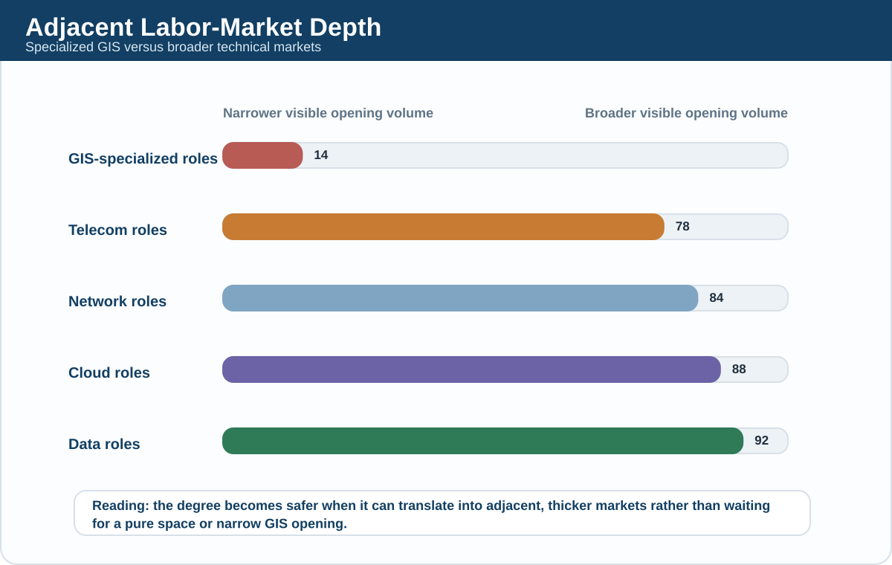
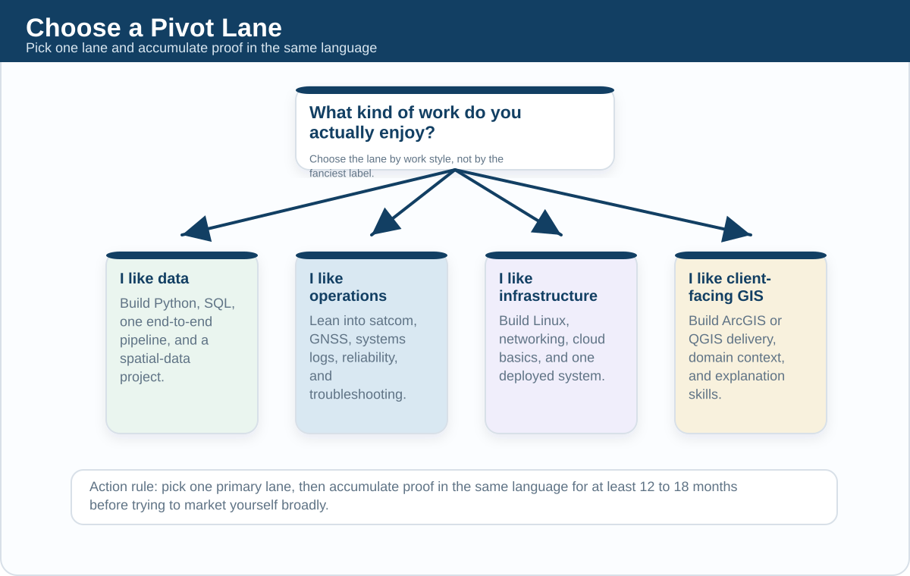

Chapter 13: Pivot Strategies
A student choosing this degree should not ask only, "Can I work in space?" The smarter question is, "If the narrowest part of the space market disappoints, what adjacent markets can I enter without wasting four years?" This chapter answers that question directly, with current Thai job signals and a practical translation map from KMITL coursework into employable roles.
Executive Summary
The best hidden advantage of KMITL's Space and Geospatial Engineering degree is not prestige. It is pivotability. As of April 12, 2026, current Thai hiring signals show a major gap between the depth of adjacent technical markets and the much smaller pool of pure geospatial or space-branded openings. Jobsdb currently shows hundreds of Bangkok openings in data engineering, cloud engineering, and network engineering, while GIS-specific openings remain in the single digits to low teens on some searches. That asymmetry matters. It means the degree becomes much safer if the student learns to translate its telecom, programming, GIS, and systems content into broader labor-market language.
The strongest pivot paths are not equal. Data engineering and data science are the largest and economically strongest pivots, but they require the most deliberate upskilling in SQL, Python, ETL, statistics, and cloud data tooling. Telecom and network engineering are the most structurally natural pivot, because the curriculum already leans heavily toward signals, circuits, communications, RF, GNSS, and ground systems. Cloud and platform work is highly attractive because Bangkok demand is broad, but this route rewards students who can think like infrastructure people rather than only app users. GIS consulting is the most identity-consistent pivot and often the easiest narrative transition, but the market is narrower and can cap out more slowly unless the student adds automation, domain expertise, or commercial skill.
The key conclusion is blunt. The degree is much more viable when treated as a launch platform into multiple technical markets than when treated as a one-shot bet on Thai space hardware. The student who learns resume translation, stack translation, and employer-language translation turns a niche-sounding degree into a flexible professional asset. The student who does not may end up with a difficult engineering credential that sounds interesting but is marketed too vaguely.
1. Why Pivotability Is One of the Degree's Main Economic Defenses
Most students and parents treat fallback plans as evidence of weakness. In reality, for this degree, a strong fallback plan is evidence that the student understands the market correctly. Thailand does not yet have a deep enough pure-space hiring base to justify blind specialization at age eighteen. The degree only becomes strategically strong when the student can move between space, telecom, GIS, software, and data language without losing credibility.
The market depth mismatch is real
Current April 2026 Jobsdb signals make the hierarchy clear. Data engineering openings in Bangkok are counted in the hundreds. Cloud engineering openings in Bangkok are also counted in the hundreds. Network engineering openings in Bangkok are counted in the hundreds. Telecommunications engineer openings across Thailand are counted in the high hundreds. By contrast, GIS engineer and GIS analyst openings on the same platform are much smaller, often in the single digits to low teens depending on the exact search. This does not mean GIS is dead. It means the specialized market is narrower than the adjacent technical market.
That is exactly why the degree's mixed structure can be valuable. A student with only remote-sensing identity has a smaller market. A student who can credibly market themselves as a telecom-capable, Python-capable, GIS-capable systems graduate has more entry doors.
The curriculum already contains pivot material
The degree is unusually suited to pivots because its curriculum is not purely about one artifact. It teaches programming, object-oriented programming, signals and systems, orbital mechanics, remote sensing, embedded systems, engineering electromagnetics, communications systems, data communications and networking, GIS, GNSS, spatial computing and AI, and ground station technology. In employer language, that curriculum can be reframed as some combination of software fundamentals, instrumentation, network logic, location intelligence, applied data analysis, and systems integration.
The market does not reward the official curriculum title. It rewards the parts of the curriculum that map to business need. This is why pivot strategy is not a backup appendix. It is central to the degree's value.
| Market lane | Current visible depth signal | Why SGE can enter | Main weakness to fix |
|---|---|---|---|
| Data engineering and data science | Hundreds of visible Bangkok openings | Python, statistics, remote sensing data, spatial AI, sensor data logic | Students often lack production data engineering depth |
| Telecom and network engineering | Hundreds of visible openings in Bangkok and Thailand | Signals, RF, communications, networking, GNSS, ground systems | Must prove practical network implementation and troubleshooting |
| Cloud and platform engineering | Hundreds of visible Bangkok openings | Networking, systems thinking, automation potential, Linux-friendly mindset | Lack of infrastructure-as-code and deployment proof |
| GIS consulting and enterprise geospatial | Smaller but highly relevant market | Direct curriculum fit in GIS, remote sensing, GNSS, spatial analytics | Narrower vacancy pool and slower ceiling for non-technical operators |

2. Pivot A: Data Science and Data Engineering
This is the strongest economic pivot if the student can actually do the work. It is also the path most likely to be romanticized incorrectly. The student should not imagine themselves becoming a fashionable "AI person" just because the curriculum contains spatial AI or programming. The route is real, but only for students willing to become strong in data plumbing, data quality, and statistical thinking.
Why this pivot is attractive
The Thai market is visibly deeper here than in pure geospatial. Jobsdb currently shows hundreds of data-engineering openings in Bangkok and hundreds of data-science openings in Thailand. The employers are also diverse: banks, retailers, insurers, industrial firms, digital platforms, and consulting firms. Current Bangkok examples include SCG hiring a Data Scientist for its cement business, Bank of Ayudhya listing a Data Scientist role, Bangkok Bank listing both Data Scientist and Python-oriented roles, and LEARN Corporation explicitly welcoming fresh graduates for a Data Engineer contract role if they already understand ETL or data engineering fundamentals.
That last signal is especially important. LEARN's listing asks for Python, SQL, PySpark, Apache Spark, Airflow, Databricks, Snowflake, and familiarity with at least one cloud platform such as AWS, GCP, or Azure. This is almost a perfect illustration of how the pivot works. KMITL gives the student enough quantitative and coding foundation to approach the lane, but not enough to be automatically employable. The student must bridge the final distance.
Why SGE students can make this jump
Remote sensing and geospatial workflows are already data work. They involve raster handling, vector data cleaning, coordinate systems, feature extraction, labeling, classification, model output checking, and decision-oriented interpretation. Spatial computing and AI push that further toward ML. GNSS and sensor-related coursework create familiarity with noisy real-world data rather than clean classroom datasets. That matters, because many business datasets are messy, incomplete, and operationally annoying.
The mechanism is simple. A strong SGE student can repackage themselves not as a "space student trying to do data," but as a technical graduate already accustomed to working with large, imperfect, location-linked, time-linked, or sensor-linked datasets. That story is credible if and only if the portfolio proves it.
What the student must add
The missing layer is production discipline. Thai data jobs increasingly ask for skills that do not arise automatically from engineering coursework: writing reliable SQL, designing ETL pipelines, working in notebooks and version control without chaos, using cloud storage and compute, orchestrating jobs, documenting assumptions, and communicating model limitations to non-technical stakeholders. A student who only does Jupyter experiments and classroom scripts will struggle.
The right upskilling sequence is usually:
- SQL strong enough to join, filter, aggregate, and debug business data.
- Python beyond homework, especially pandas, NumPy, scikit-learn, and clean project structure.
- At least one pipeline pattern such as Airflow, scheduled scripts, or ETL on a cloud platform.
- One end-to-end project where raw data becomes a cleaned dataset, model, dashboard, or operational output.
When this pivot works badly
It fails when the student tries to skip foundations and sell themselves as AI-first. Thai employers increasingly know the difference between someone who can really build and someone who has only touched prompt engineering or copied model tutorials. For SGE students, the winning move is to start with data engineering-adjacent credibility, then move upward into analytics, ML, or spatial AI when the fundamentals are strong.
3. Pivot B: Telecom and Network Systems
This is the most natural technical pivot from the degree, because large parts of the curriculum already speak this language. It is not a glamorous fallback, but it is a credible one.
Why it is structurally natural
The program sits inside a telecommunications-influenced environment, and the upper-year curriculum shows that clearly: RF Systems, Communication Systems, Data Communications and Networking, Satellite and Space Communications, GNSS, and Ground Station System and Technology. That means the student is not inventing a pivot from nowhere. They are extending an existing engineering identity.
Current Thai signals support the viability of this lane. Jobsdb currently shows hundreds of network engineering openings in Bangkok and well over one hundred telecommunications engineer openings across Thailand. Current listings include AIS for Core Network Planning Engineer, Huawei Thailand for IP Network Engineer and Core Network-related roles, FBH Technology for telecom technical support tied to FTTx and equipment commissioning, and Zenith for Network Engineer roles welcoming early-career candidates.
Who hires and what they actually need
The relevant employer types are broader than students think. They include mobile operators such as AIS and True, vendors such as Huawei and Hytera, data-center operators such as SUPERNAP, enterprise infrastructure teams, rail and transport communication operators, system integrators, and field-service organizations. The work itself is also broader than "building a satellite link." It may involve network planning, IP design, transmission, FTTx support, commissioning, hardware integration, monitoring, log analysis, escalation, or site troubleshooting.
This matters because a student who imagined aerospace but discovers they actually like networks has not failed. They have found one of the degree's most monetizable adjacent lanes.
What KMITL students must prove
The main weakness is practical operations proof. Employers in telecom and network work care less about conceptual elegance and more about whether the candidate can read network diagrams, understand routing and switching logic, follow procedures, configure equipment safely, document issues, and keep calm when real systems fail. The curriculum gives theoretical support, but students need extra evidence such as lab projects, packet analysis, mini-network builds, SDR or RF experiments, Linux practice, or CCNA-level fluency.
The smart framing here is not to pretend the student already has five years of telecom depth. It is to present a technically serious junior profile: communications systems background, familiarity with RF and GNSS concepts, networking coursework, hands-on troubleshooting habits, and willingness to work in operational environments.
The strongest argument against this pivot
The downside is that some telecom roles can become procedural rather than strategically expansive, especially if the student enters through support-heavy work and does not keep learning. The market is larger than the GIS market, but not every telecom role compounds equally. Students should use this pivot as an entry path into higher-value systems, cloud-network, or architecture work rather than treating first-job stability as the finish line.
4. Pivot C: Cloud and Platform Engineering
This is one of the best pivots for students who like systems more than fieldwork and who are willing to become infrastructure-literate. It is also the pivot where superficial certification-chasing can waste time.
Why the opportunity is real
Bangkok's cloud market is visibly large. Jobsdb currently shows hundreds of cloud-engineering openings in Bangkok. Examples include Bank of Ayudhya's Cloud Engineer / DevOps Engineer role for Krungsri Nimble, which emphasizes managing AWS and OpenShift infrastructure for availability, reliability, and security, and SCB TECH X's Cloud Network & Service Integration Engineer role, which explicitly references AWS, Azure, GCP, multi-cloud networking, infrastructure-as-code, and DevOps pipelines. Bangkok Bank is also hiring for Cloud Engineer work around private and hybrid cloud environments.
The lesson is important. The cloud path is not just for computer science students. It is open to technically disciplined people who understand systems, networks, security, and automation. SGE students can fit that profile if they build the missing layer.
Why SGE can plausibly pivot here
Cloud work is not only about writing web apps. It is about understanding architecture, failure points, connectivity, observability, configuration, permissions, deployment, and operations. Students who survive signals, electromagnetics, communications, and embedded systems are often more comfortable with system-level thinking than they realize. Ground station concepts and network coursework can also support the transition because both teach dependency chains and operational reliability.
The weakness is not intelligence. It is unfamiliar tooling. Most SGE students will need deliberate exposure to Linux, Git, Docker, Terraform or another infrastructure-as-code tool, CI/CD habits, and one cloud platform deep enough to do something real.
Certification strategy: useful, but only in the right order
Certification is where students often overspend. Official vendor guidance is helpful here. AWS Certified Cloud Practitioner is explicitly marketed as a foundational starting point and costs 100 USD. AWS Solutions Architect - Associate costs 150 USD and AWS says candidates are ideally people with about one year of hands-on experience designing cloud solutions, though some candidates with one to three years of IT experience use it as a starting point. Google Cloud's Cloud Digital Leader costs 99 USD with no formal prerequisites. Microsoft positions Azure Fundamentals as a beginner-level starting point for foundational cloud knowledge.
The practical judgment is this: one foundational certificate can help organize learning and signal seriousness, but certificates without projects are weak. For this degree, the better sequence is project first, then cert, then targeted applications. A small but real deployment beats a pile of exam badges.
| Credential or training | Current official signal | Best use for SGE student | When it is overrated |
|---|---|---|---|
| AWS Certified Cloud Practitioner | Foundational exam, 100 USD | Good first cloud signal for students with limited IT background | If treated as proof of employable engineering depth by itself |
| AWS Solutions Architect - Associate | Associate exam, 150 USD, AWS recommends about 1 year hands-on experience | Useful after one real deployment or infrastructure project | If taken too early as pure status collection |
| Google Cloud Digital Leader | 99 USD, no prerequisites | Good for business-facing cloud literacy or product-oriented students | If the target role is hands-on engineering and no build work exists |
| Azure Fundamentals | Beginner-level certification path focused on core Azure concepts | Reasonable entry point for Thai enterprise-cloud environments | If used as a substitute for networking and systems practice |
The real barrier
The cloud pivot is not blocked by degree title. It is blocked by the absence of operational proof. If the student can show a small system running on cloud infrastructure, logging correctly, handling data, and failing gracefully, the degree becomes much less of a problem. If the student can only say they are "interested in cloud," the market will ignore them.
5. Pivot D: GIS Consulting and Enterprise Geospatial
This is the most intuitive pivot because it keeps the student's academic identity largely intact. It is also the path that many outsiders imagine when they hear the degree title. The mistake is to think that because the narrative is smooth, the labor market is automatically large. It is not.
Why this path is still important
Even though the vacancy pool is smaller than data, cloud, or networking, the fit is unusually direct. Current Thai signals are very clear. ERM is hiring for GIS Consulting Associate or Senior Associate work in Bangkok, using ArcGIS Pro and supporting environmental impact and planning work. CDG Group is hiring for GIS Business Support tied to disaster, agriculture, retail, and AI-related GIS solutions. RIMES has a GIS Specialist role focused on surveying, mapping, digitization, integration, and GIS database maintenance. Thaicom is hiring for geospatial-solution commercialization, which shows that the market includes not only analysis roles but also technical-commercial roles.
These examples matter because they prove the geospatial path is not fictional. It exists in environmental consulting, implementation, early warning systems, enterprise platforms, and commercial geospatial solutions.
What the work actually looks like
GIS consulting is not only drawing maps. In a firm like ERM, it can mean preparing ArcGIS Pro outputs for environmental and social impact assessments, supporting spatial analysis, integrating remote sensing, and translating location data into project decisions. In a firm like CDG or Esri Thailand's ecosystem, it may mean implementation support, solution configuration, customer coordination, dashboarding, field data setup, or project delivery. In organizations like RIMES, it can become operational mapping and database stewardship with real public-risk consequences.
This is why the GIS path is best for students who like both technical work and applied context. The strongest people in this lane can talk to clients, interpret requirements, clean data, produce reliable outputs, and explain what the map means for a real decision.
How to avoid being trapped at the low end
The ceiling problem in GIS usually hits people who stay tool-dependent instead of becoming solution-capable. The student who only knows menu clicks in ArcGIS risks stagnation. The student who adds Python, ArcGIS automation, data modeling, web apps, imagery interpretation, or domain expertise in sectors like utilities, ESG, transport, or agriculture can move much faster.
Esri Thailand's own market positioning reinforces this. Its public materials emphasize ArcGIS as enterprise technology, with integration into AWS and Azure environments, data-science capability, cloud GIS, managed services, and professional services. Its current Thai training catalog also shows practical pathways: the ArcGIS Pro: Essential Workflow e-learning course is currently listed at 5,900 THB before VAT, and the curriculum explicitly covers creating, managing, analyzing, and sharing data. That is useful, but the economic lesson is bigger. Enterprise GIS is not just cartography. It is platform work.
Why this pivot can be underrated
The GIS lane is often dismissed because it looks smaller than mainstream software. That is true at the vacancy-count level, but the fit premium is higher for this degree than for many other majors. An SGE graduate can often tell a more believable story here than a generic IT graduate can, especially if they understand remote sensing, GNSS, imagery, and spatial reasoning rather than only software syntax.
6. Resume Translation: How to Convert the Degree Into Employer Language
This is where many students lose value. They describe what they studied instead of what they can do. Employers do not hire course titles. They hire evidence of function.
The core rule
Do not make the employer decode your degree for you. If you apply to a data role, your resume should read like a junior data person with spatial depth. If you apply to a telecom role, your resume should read like a communications-and-systems candidate. If you apply to a cloud role, your resume should emphasize networks, Linux, automation, and deployments. If you apply to GIS consulting, your resume should focus on analysis, implementation, tools, and stakeholder outputs.
| Raw academic item | Weak resume wording | Better translated wording | Best target lanes |
|---|---|---|---|
| Embedded Systems and Applications | Studied embedded systems | Built microcontroller-based data acquisition workflow with sensor interfacing, serial communication, and debugging under hardware constraints | Telecom, hardware test, IoT, cloud-edge, data acquisition |
| Data Communications and Networking | Took networking course | Implemented and analyzed network communication scenarios, documented failure cases, and applied protocol concepts to system troubleshooting | Telecom, network, cloud, systems support |
| GNSS Technology and Location Intelligence | Learned about GNSS | Analyzed location datasets and positioning outputs to derive usable spatial insight for navigation and decision support | GIS, data, mobility, telecom, logistics |
| Remote Sensing | Studied remote sensing imagery | Processed and interpreted imagery to classify, compare, and communicate land or surface conditions using spatial analysis workflows | GIS, consulting, data, ESG, agriculture |
| Spatial Computing and Artificial Intelligence | Worked on AI project | Developed spatial-analysis or machine-learning workflow using Python-based preprocessing, feature engineering, validation, and result interpretation | Data science, GIS, computer vision, analytics |
| Ground Station System and Technology | Studied ground station systems | Worked on communications and monitoring concepts relevant to telemetry, system integration, and mission-support operations | Telecom, satcom, network operations, systems engineering |
Project titles matter too
A student should not title a project "Team Project 2." That says nothing. Better titles would be "Flood-risk geospatial dashboard using satellite and administrative data," "GNSS location quality analysis pipeline," "Microcontroller sensor telemetry prototype," or "Spatial demand-mapping model for route planning." The project title itself should help the recruiter imagine a use case.
What to remove from the resume
Remove vague identity phrases such as "passionate about space technology" unless the rest of the resume proves technical depth. Remove lists of software with no project context. Remove generic claims like leadership, teamwork, and problem solving unless there is evidence. Replace them with built things, analyzed things, fixed things, or delivered things.
What to add
Add a targeted headline, a concise skill stack, one or two role-relevant projects, and evidence of tools. For example, a data-targeted version might lead with Python, SQL, pandas, scikit-learn, QGIS, and ETL exposure. A telecom version might lead with communications systems, RF fundamentals, GNSS, networking, Linux, and troubleshooting. A GIS consulting version might lead with ArcGIS Pro, QGIS, remote sensing, spatial analysis, dashboarding, and client-facing project support.
7. Skill and Certification Map by Pivot
The smartest approach is not to collect everything. It is to make one pivot legible first. The student should choose one primary lane and one secondary backup lane, then build around that pair.
| Pivot lane | Must-have proof | Useful but secondary | Good signal example | Bad student mistake |
|---|---|---|---|---|
| Data science / data engineering | SQL, Python, one ETL or modeling project, data-cleaning discipline | Cloud cert, notebooks, dashboard tools | End-to-end pipeline from raw data to deployable insight | Calling basic plotting "AI" |
| Telecom / network | Networking concepts, troubleshooting, Linux comfort, lab evidence | CCNA-style preparation, SDR experiments, vendor familiarity | Mini network build, protocol analysis, or telecom operations project | Only knowing theory and no operational practice |
| Cloud / platform | Linux, Git, deployment, automation, one real infrastructure project | AWS or Azure entry cert, Docker, Terraform | Hosted application or data workflow with monitoring and security basics | Collecting certs with no working build |
| GIS consulting / enterprise geospatial | ArcGIS or QGIS competence, clean deliverables, domain context | Esri training, web GIS, Python automation | Portfolio with maps, analysis notes, dashboard, and business explanation | Only showing screenshots of maps with no decision logic |
Esri Thailand currently lists ArcGIS Pro: Essential Workflow at 5,900 THB before VAT. That is a reasonable training spend if the student already has active GIS work to strengthen. It is not a substitute for a portfolio. The same logic applies to cloud certifications: useful signals, but weak if detached from real builds.

8. Deep Analysis: Which Pivot Is Actually Best?
A good pivot strategy is not the one that sounds most sophisticated. It is the one with the best combination of labor-market depth, degree fit, and realistic upskilling distance.
Strongest argument for the data pivot
The market is larger, salaries scale well, and spatial data can become a differentiator rather than a limitation. A student who successfully moves into data engineering or applied analytics can escape the narrowness of the Thai space market and access broader digital demand.
Strongest argument against the data pivot
The gap is real. Many SGE students will underestimate how much SQL, statistics, pipeline engineering, and business-data hygiene they need. Without serious self-training, the pivot remains aspirational.
Strongest argument for the telecom pivot
It is closest to the underlying curriculum. The student is not forcing a radical identity change, and Thailand has a real communications and network labor market.
Strongest argument against the telecom pivot
Some early roles can become routine and do not automatically deliver the same salary acceleration as stronger digital-data paths unless the student keeps moving upward.
Strongest argument for the cloud pivot
The vacancy depth is strong, the enterprise demand is broad, and the systems mindset from the degree can transfer surprisingly well.
Strongest argument against the cloud pivot
The tooling gap is large enough that weak students can fool themselves. A certificate without operational skill will not fix that.
Strongest argument for the GIS consulting pivot
It is the smoothest narrative transition and the most authentic use of the degree's geospatial identity. It also supports work in agriculture, ESG, utilities, disaster management, planning, and environmental consulting.
Strongest argument against the GIS consulting pivot
The market is smaller, and non-technical GIS roles can plateau if the student does not add automation, coding, or domain depth.
Reasoned judgment
If the student is strong in coding and statistics, the best long-run pivot is data engineering or data science, with geospatial as a differentiator rather than the whole identity. If the student is stronger in systems, signals, and operational troubleshooting, telecom and cloud form the most practical pair. If the student is strongest in spatial reasoning, mapping, imagery, and client-facing interpretation, GIS consulting is the most natural primary lane, but it should be reinforced with Python or enterprise-platform capability to avoid ceiling risk.
The chapter's overall verdict is therefore specific: the safest two-pivot combination for this degree is usually telecom plus cloud, or GIS plus data. Those combinations preserve the degree's existing strengths while opening larger markets.
9. Chapter Takeaway
The most important safety net in this degree is not a government job or a lucky internship. It is the student's ability to pivot intelligently. The strongest pivots are data, telecom, cloud, and enterprise GIS, but each requires a different translation of the same degree. The program is worth more when the student learns to market functions, tools, and delivered outcomes rather than academic labels. In practical decision terms, the degree is much safer than it looks if the student is proactive, and much riskier than it looks if the student is passive.
Sources
Public vacancy pages and market pages referenced here were checked on April 12, 2026. Job counts and listings can change quickly; they are used as live market signals, not permanent statistics.
- Jobsdb Thailand: Data Scientist jobs in Bangkok
- Jobsdb Thailand: Data Engineer jobs in Bangkok
- Jobsdb Thailand: Cloud Engineer jobs in Bangkok
- Jobsdb Thailand: Network Engineer jobs in Bangkok
- Jobsdb Thailand: Telecommunications Engineer jobs
- Jobsdb Thailand: GIS Engineer jobs
- ERM: GIS Consulting Associate / Senior Associate
- Jobsdb Thailand: CDG Group GIS Business Support
- Esri Thailand: ArcGIS
- Esri Thailand: Esri Services
- Esri Thailand: ArcGIS Pro - Essential Workflow
- Esri Thailand: Building Web Apps with ArcGIS Experience Builder
- AWS Certified Cloud Practitioner
- AWS Certified Solutions Architect - Associate
- Google Cloud: Cloud Digital Leader
- Microsoft Learn: Fundamentals certifications
- Microsoft Learn: Azure Fundamentals